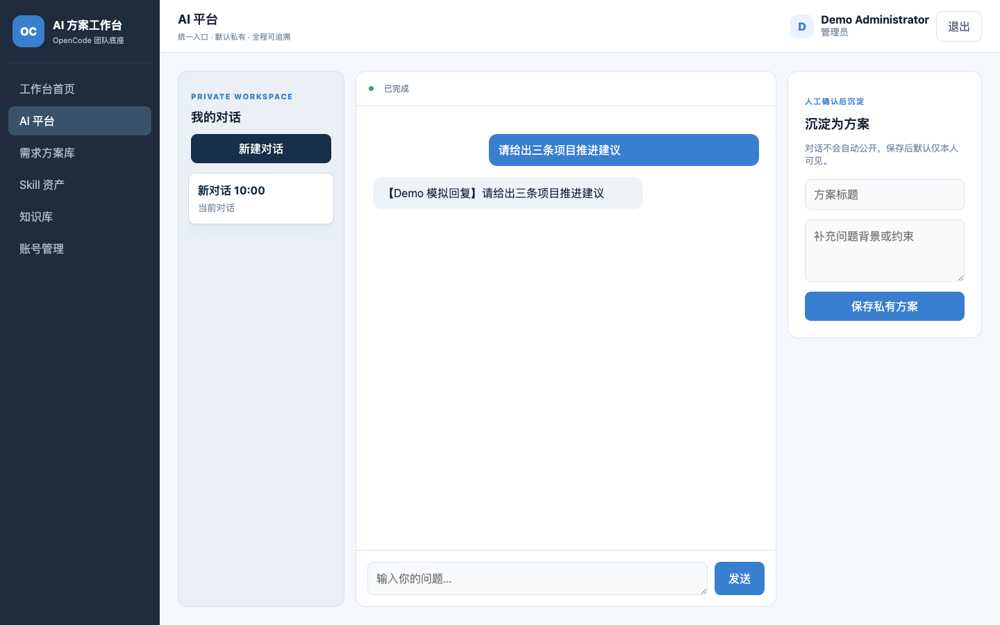
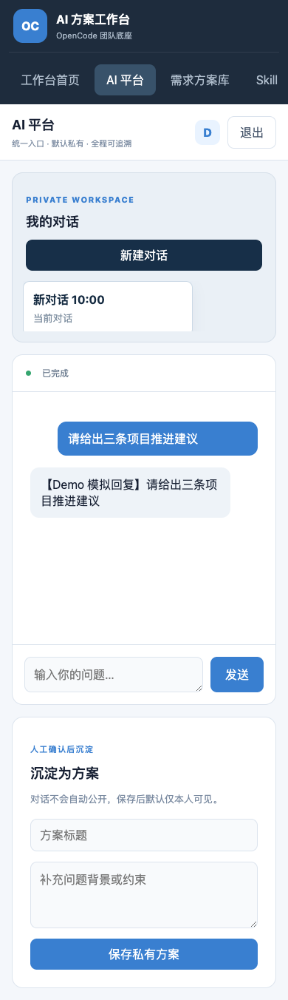

最新增量：管理员运维 API
2026-09-07 · Stage 2E.2a：管理员可查询健康、Worker 和最近 200 条任务元数据，并取消任务。私人标题、正文、幂等键和连接凭据不向管理员返回。角色、CSRF、取消幂等、审计和失败脱敏定向测试 4/4 通过。
可视化后台、真实模型联调及 Linux 验收尚未完成。下方保留已交付多会话产品链路的评审记录。
OPENCODE TEAM WORKBENCH · STAGE 2D
常驻 Gateway 多会话产品链路
把已验证的双 Worker 调度与可续传协议，接入成员真正使用的 React Conversation 界面。
TL;DR
Stage 2D 已在 Mac 完成：正式入口常驻双 Worker Gateway，成员可创建和切换私人 Conversation，看到排队、运行、停止、完成与恢复状态；无密钥 Demo 也走同一条产品协议。Stage 2E、内部模型和 Linux 生产验收仍未完成。
本次产品变化
对话真正持久问题、回答和任务状态由服务端事件重建，刷新和断线不依赖浏览器私有存储。
执行统一受控生产入口默认启动两个常驻 Worker，按用户公平排队，同一 Conversation 串行执行。
边界保持不变所有执行仍经过 OpenCode；管理员只看运行元数据，成员正文默认私有。
交付与状态
| 交付面 | 结果 | 状态 |
|---|---|---|
| 生产组合 | Gateway、公平队列、双 Worker 池与服务器生命周期统一启停 | 完成 |
| 实时协议 | 订阅、提交、取消、幂等、序号续传、恢复边界、登录撤销 | 完成 |
| 成员界面 | 私人 Conversation、新建切换、历史恢复、执行状态、停止任务 | 完成 |
| 无密钥 Demo | 使用 gateway.v1 和本地模拟 Worker，不调用 Provider | 完成 |
| Stage 2E | 重启恢复、运维后台、真实内部模型和生产验收 | 待开发 |
验收证据
npm test：182/182 通过；Vite 构建 39 modules transformed。- 真实 HTTP/WebSocket 覆盖权限、CSRF、取消、断线补发、恢复边界与 512KB 帧上限。
- 20 用户确定性模拟未突破全局并发 2、单用户并发 1，且无饥饿。
- 双账号浏览器验证私人 Conversation 隔离；普通成员没有账号管理入口。
- 1440×900 与 390×844 无横向溢出，Console Error 为空，浏览器存储条目为 0。


上线边界
NOT LINUX PRODUCTION READY
当前结论只覆盖 Mac 开发环境和本地模拟回复。Gateway 重启后的队列重建、管理员运维视图、真实内部模型、多轮故障演练、Nginx HTTPS、备份恢复与 Linux 容量验收仍是上线前门禁。